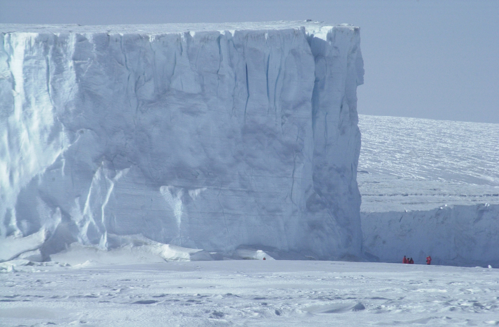

ΜΕΤΑΚΙΝΗΣΕΙΣ ΣΕ ΠΟΛΙΚΕΣ ΠΕΡΙΟΧΕΣ

Η καλύτερη επιλογή, αν "αγκυροβολήσετε" στην Αρκτική, είναι να μείνετε στην ίδια θέση, εκμεταλλευόμενοι στο έπακρο ό,τι έχετε διαθέσιμο. Αν βρεθείτε σε κατάσταση επιβίωσης, λόγω αεροπορικού ατυχήματος, το περιβάλλον θα σας φαίνεται παράξενο και απειλητικό.
Πιθανόν να αντιμετωπίσετε πιο άμεσα προβλήματα, όπως είναι οι σωματικές βλάβες. Κατασκευάστε ή προσαρμόστε μια θέση ώστε να την χρησιμοποιήσετε ως καταφύγιο και προσπαθήστε να ζεσταθείτε και να δημιουργήσετε μια όσο το δυνατόν άνετη κατάσταση. Η πτώση ενός πολιτικού αεροσκάφους θα θέσει αμέσως σε κινητοποίηση ένα μηχανισμό μαζικής και μακράς έρευνας.
Για ένα άτομο που αντιμετωπίζει κατάσταση επίβιωσης στην Αρκτική, η επιλογή είναι τελείως διαφορετική. Αν το άτομο είναι 100% βέβαιο ότι θα φθάσουν ομάδες διάσωσης και ότι θα μπορούν να τον εντοπίσουν, τότε δεν θα πρέπει να μετακινηθεί από το σημείο του ατυχήματος. Εντούτοις, η πείρα έχει αποδείξει ότι οι πιθανότητες εντοπισμού ενός ατόμου που έχει χαθεί στην Αρκτική είναι πολύ μικρές και ότι η καλύτερη προοπτική για επιβίωση εγκείται στην ικανότητα του ίδιου του ατόμουνα γυρίσει πίσω στον κόσμο του πολιτισμού. Παρά τις προφανείς δυσκολίες, αυτό μπορεί πράγματι να επιτευχθεί με τον καλύτερο τρόπο κατά τον χειμώνα, όπου το βάδισμα είναι ευκολότερο. Οι λίμνες και τα ποτάμια είναι παγωμένα, όπως είναι και η βαλτώδης τούνδρα. Η διάβαση μέσα από την τούνδρα, με ζεστό καιρό, μπορεί να αποτελέσει εφιάλτη - μπορεί δηλαδή να χρειαστούν οκτώ ώρες την μέρα για να διανύσετε με τα πόδια μια απόσταση μικρότερη από ένα μίλι.
Προβλήματα μετακινήσεων στις αρκτικές περιοχές:
Κατά τον χειμώνα:
- Άκρως χαμηλές θερμοκρασίες, ισχυροί άνεμοι και χιονοθύελλες.
- Μόνιμο σκοτάδι για πολλούς μήνες.
Κατά το καλοκαίρι:
- Το λιώσιμο του χιονιού μετατρέπει την περιοχή της τούνδρας σε απέραντο βάλτο.
- Σύννεφα από βλαβερά έντομα προκαλούν δυσφορία μέχρι τρέλας.
- Πεσμένα και σαπισμένα δέντρα, καλυμμένα με πυκνά και πορώδη βρύα, κάνουν το περπάτημα αβέβαιο και επικίνδυνο.
Καθ' όλο το έτος:
- Παράξενο και εχθρικό περιβάλλον μοιραζόμενο με κάποια μεγάλα σαρκοφάγα ζώα για τα οποία η τροφή είναι η πρώτη προτεραιότητα.
Μέσα Μετακίνησης
Κοντάρι ασφαλείας
Κόψτε ένα κοντάρι και χρησιμοποιήστε το για πολλούς σκοπούς - από μπαστούνι για βάδισμα, έως πάσσαλο στηρίγματος ενός καταφύγιου η ακόμη και ως ξύλο για φωτιά μαγειρέματος. Στην Αρκτική, συνιστάται να έχετε ένα μακρύτερο και πιο γερό κοντάρι, μήκους τουλάχιστον 4μ. και αρκετά δυνατό για να αντέξει το βάρος σας. Το κοντάρι βοηθάει στον προσανατολισμό, νεργεί ως μέσο ασφαλείας όταν βαδίζετε σε πάγους, παρέχει την βάση για την στήριξη ενός καταφυγίου και βοηθάει επίσης να απλώσετε ένα δίχτυ, όταν ψαρεύετε σε πάγους.
Χιονοπέδιλα ή χιονοσανίδες
Το χιονοπεδιλο είναι λίγο μεγαλύτερο από μια "ρακέτα του τέννις", που προσδένεται στην σόλα του άρβυλου σας.
Αν δεν έχετε χιονοπέδιλα του εμπορίου, συνιστάται να φτιάξετε ένα ζευγάρι διότι είναι δύσκολο και κουραστικό να περπατάτε σε βαθύ και μαλακό χιόνι. Βρείτε κάποιο σκληρό και επίπεδο υλικό, το οποίο θα εξυπηρετεί το σκοπό αυτό. Μπορείτε να χρησιμοποιήσετε καθίσματα, ιμάντες φορτίου και άλλα μεταλλιά μέρη. Χιονοπέδιλα που φτιάχνονται από ισχυρό πλαστικό ή αλουμίνιο είναι τα πλέον κατάλληλα. Ελέγχετε τα χιονοπέδιλα σας καθημερινά και επιδιόρθωστε τα, αν χρειάζεται. Αφαιρέστε τα χιονοπεδιλα να η επιφάνεια του χιονιού είναι αρκετά σκληρή ώστε να μπορεί να στηρίζει το βάρος - θα κινείστε πιο γρήγορα.
Μπαστούνια Σκι
Τα μπαστούνια σκι αποτελούν σημαντικό βοήθημα, όταν περπατάτε με χιονοπέδιλα ή όταν φοράτε απλά χιονοπάπουτσα. Τα μπαστούνια μπορείτε να τα κατασκευάσετε είτε από κομμάτια ξύλο, είτε από κοίλο μέταλλο. Το ισχυρό αλουμίνιο είναι το καλύτερο υλικό.
Μπορείτε να φτιάξετε αυτοσχέδιες λωρίδες χειρός από καναβάτσο ή δέρμα και μπορείτε να χτυπήσετε το αντίθετο άκρο για να ισιώσει. Οι λωρίδες αυτές σε συνδυασμό με το κοντάρι σας, μπορεί να αποτελέσουν το πλαίσιο του ταξιδιωτικού σας καταφυγίου.